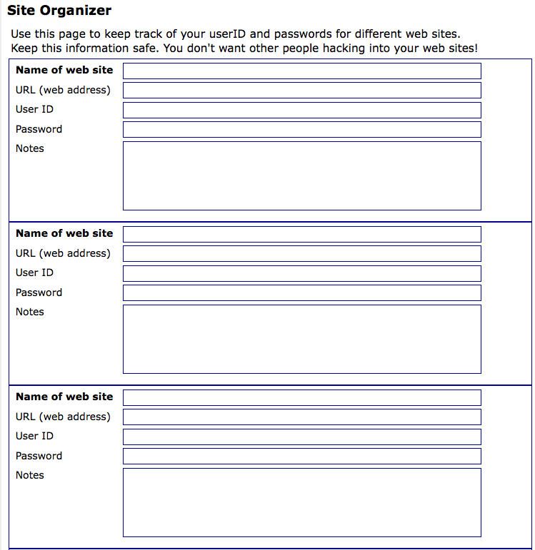
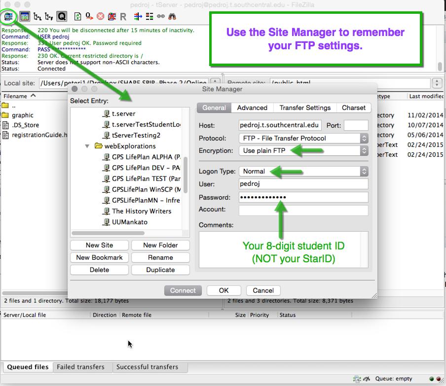
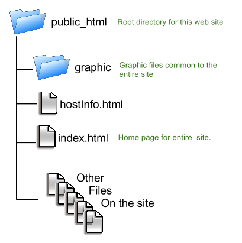

|
File Transfer Protocol |
Getting Published |

In this module you will learn:
- How to get your own domain name.
- Where you can host your web site using your own domain name.
- How to use FTP to publish your web pages and graphics out on the Web.
- Using <meta> elements
WII-FM (What's In It - For Me)
Having a web page on your computer is okay... for about 5 minutes. But, the really power of building web pages is being able to publish whatever you want out on the Web.
Show the world whatever you want:
- Your resume
- Your photos or drawings
- A blog
- Your hunting/fishing trophies
- A travel log
- A company you are starting up
Complete these Learning Activities:
Total estimated time for this module: 3 hours.
Take the Self-Quiz: FTPmeta. You can take the self-quizzes as many times as you like.
Be smart and take the self-quiz once each day to learn the material.
Estimated Time: 10 minutes (probably a lot less) each time you take a self-quiz.
Take the Self-Quiz: FTP.
Read chapter 12 of Basics of Web Design text.

- Obtain a domain name.
- Choosing a hosting service.
- Publishing files to the Web.
Estimated Time: 1 hour
Read chapter 12 of Basics of Web Design HTML5 text.
Watch this white board talk to see how FTP is different then normal browser requests to the server.
Browsers can only request files from the server. It is a READ ONLY type of relationship.
FTP, on the other hand, allows a person to update files on the server so they can be read by the browser. It is a READ/WRITE relationship. To protect web sites from being hacked, FTP requires that you use the correct username and password. Normally you will only copy files out to the server but it is possible to download all the files on a server to your own computer.
Browsers are file readers. FTP applications, like CyberDuck and FileZilla, are file copy utility programs.
Windows FileZilla from Portable Apps. You can also use CyberDuck (see below for Macintosh).
Warning: Do not download this software from other sites. Those versions most likely contain malware.
Macintosh - https://cyberduck.io/. There is a version for Mac OS X and Windows.
Estimated Time: 30 minutes
Download and use an FTP program to move your files out to your web server.
Watch these videos to see how to use FileZilla and CyberDuck.

{kind=link}
Host or FTP site name: yourFirstNameInitialOfLastName.t.southcentral.edu (all lower case)

User Name: yourFirstNameInitialOfLastName - Must be 8 characters or less. (all lower case)
Password: your student ID number including leading zeros.
Everything will be in lower case.
The spelling of your name is based on the class list found on D2L.
Click on the images for a larger view.
Bandwidth Warning! Be judicious with your uploads! Every web hosting site has to pay attention to band width. It is the same issue as limited mobile phone plans.
If a site gets bombarded with lots of requests they need to have the bandwidth in place to cover that. In order to do that they have to set limits on the bandwidth and when that is exceeded they charge extra.
Only upload new modules and themes or specific files that you have updated. If you upload all the files every time you will get locked out of the server with a Bandwidth Exceeded message.
I am not able to override this and have to put in a help ticket to the network administrator.
Estimated Time: 1 hour
Connect to your hosting account out on the t.server.

You will have this space the entire time you are in the Computer Careers program.
Be smart and organize your folders on your local computer using the 06public_html folder that you set up at the beginning of the course.
When everything is ready on your local computer, FTP the files up to the server, making sure the files that are inside 06public_html transfer into the folder public_html out on the server.
Do all your work on your local files and then copy them up to the server. The files on the server should mirror what is on your computer.
Staying organized will save you lots of time and frustration.
IMPORTANT! Your web site on the t.server has a limit of 500kb. This means you will want to make your images as small as possible and make certain you don't have any extra files that aren't needed out on the server. Make every file count!
Estimated Time: 8-10 hours!!! (10 minutes if all your files are organized on your computer/flash drive and you don't mistype your userID and passwords to the t.server)
Organize your website in your local 06public_html folder before copying them up to the public_html folder out on the t.server.
Add metatags to your HTML template and all your web pages suing this Tutorial: How the metatags work.
Add the description and robots meta tags to your template file. Validate this file so there are no errors/warnings. (You don't want to duplicate your errors every time you make a new page.)
Estimated Time: 30 minutes or less.
Add metatags to your HTML template and all your web pages using this Tutorial: How the metatags work..
Tips on domain names: Watch out for names that might be misread by everyone around the world...
Here are some examples:
- www.expertsexchange.com - A site where programmers can trade advice is found named Experts Exchange.
- www.ladrape.co.uk - A British company selling high-end quilted bedspreads named La Drape, Ltd.
- www.angelfire.com/alt/americanscrapmetal- A scrap metal recycling firm named American Scrap Metal.
- www.speedofart.com - A collective or art designers are online called Speed of Art.
- www.therapistfinder.com - A directory for therapy services for a company named Therapist Finder.
- http://uaa.alaska.edu/collegeofartsandsciences/
A little known secret is that domain names are not case sensitive. (The path statement is. Folder and file names are case sensitive!)
Show your clients how to use camelCase to make their web addresses more readable: http://WebExplorations.com -- http://SouthCentral.edu -- http://ExpertExchange.com
Estimated Time: 0 minutes or less but could make you a hero to your clients
Use upperLowerCase with domain names for readability.
Compare Web Hosts - Here's a great article: 19 Important Features to Look for in a Web Host from NetTuts+.
Executive Summary: We don't make websites to let them sit on our own computers: we set them free on the web. While it's often more fun to create the website than to worry about hosting it, web hosting isn't a decision you should make quickly. In this roundup, I'll point out 19 things you should look for when choosing your web host.
From Amount of Storage to Amount of Bandwidth to Up-Time, this article will give you several guidelines that will help you choose a good hosting service for your clients' sites.
Looking for a great web host? Need a place to register a domain name?
Do a Google search for: web hosting ratings. 2014 Host Ratings.
One of my favorites is the $1/month - http://www.nosupportlinuxhosting.com/. I have a site that I use to test things out on like WordPress and Drupal installations.
Read this article 19 Important Features to Look for in a Web Host from NetTuts+ to help you determine a quality hosting service.
Confused about folders and files?
Don't know how to organize things on your computer?
Wondering how to tell the web browser where to look for everything?
Check out this short tutorial on the PATH statement.
Estimated Time: 30 minutes
Check out this short tutorial on the PATH statement.
Learn 6 SEO Tips from the Expert (Google)
Maile Ohye from Google covers the five most common errors she finds in SEO, and then concludes with six quick tips to make sure you're on the right track.
Estimated Time: 30 minutes
Check out this short tutorial on the PATH statement.
Here are some CSS tricks in a PowerPoint (cssTrick.ppt) you might find useful. (Right-mouse click on the link and images to save the files to your disk.)
- Rounded Corners
- Gradients (great for backgrounds)
- Fonts
- Resize an image to fill the background
Use this as a starter HTML web page: trick.html.
Estimated Time: 30 minutes
Your Graded Assignments For This Module
Take the Graded Quiz: FTP Meta
- There will be 10 true/false and multiple choice questions.
- 10 questions - 10 minutes - 10 points
- Feel free to use your book or look stuff up on the Web or try things out on your computer.
- You will have one chance to take the quiz.
- The questions will be from the same database that the self-quiz uses.
- The quiz will be scored automatically and your points shown in your D2L grade book.
Estimated Time: 10 minutes
Look on the Course Map for the due date for this graded activity.
 Start working on Project: SEOGimp
Start working on Project: SEOGimp
Parts of the project you can do right now:
- Create an info-graphic showing how FTP works
- Create a web page with a list of 10 domain names and the web hosting comparison.
- Copy essential files for your published website into 06public_html and FTP up to the t.server.
Look on the Course Map for the due date for this graded activity.
What should be on my web site?
- Your resume page (index.html)
- The hostInfo.html page with the graphic showing how FTP works, your domain name list, and the web host comparison.
- The external style sheet that all your web pages will be using. (You created this for Project:CSS)
- A graphic folder with all the images in it.
Look on the Course Map for the due date for this graded activity.

Your Tip-Of-The-Week
(Click on the lightbulb to reveal the tip.)
Tip of the Week:
Fifty Things Your Customers Wish You Knew
This is an interesting and thought provoking booklet that will help you think of your clients and end users a little differently.
Notice the items marked in bold.
This is interesting on two levels.
First: This eBook is a great reminder of how to pay attention to your clients and their end-users.
Second: Notice how this piece is also a self-promotion for Sonia Simone.
- Her name and a URL are listed in the footer of every page.
- What is she marketing?
- Follow the links (This is an old eBook and the links are obsolete, but if you follow the trail you will come to her blog... It is worth the work.)
- What "booklet" could you pull together that would bring people to your site?
- Imagine having an eBook out there like this and a potential employer comes across your work.
- An eBook such as this is easy to produce. Simply create a web page with the content and CSS and then print it out as a PDF file. (You can find PDF creation programs out on the Web.)
What's Next?

Photo editing is an essential skill used with web development. Learn how to create your own gradients, make animated gifs using Gimp, a free and open-source photo editor.